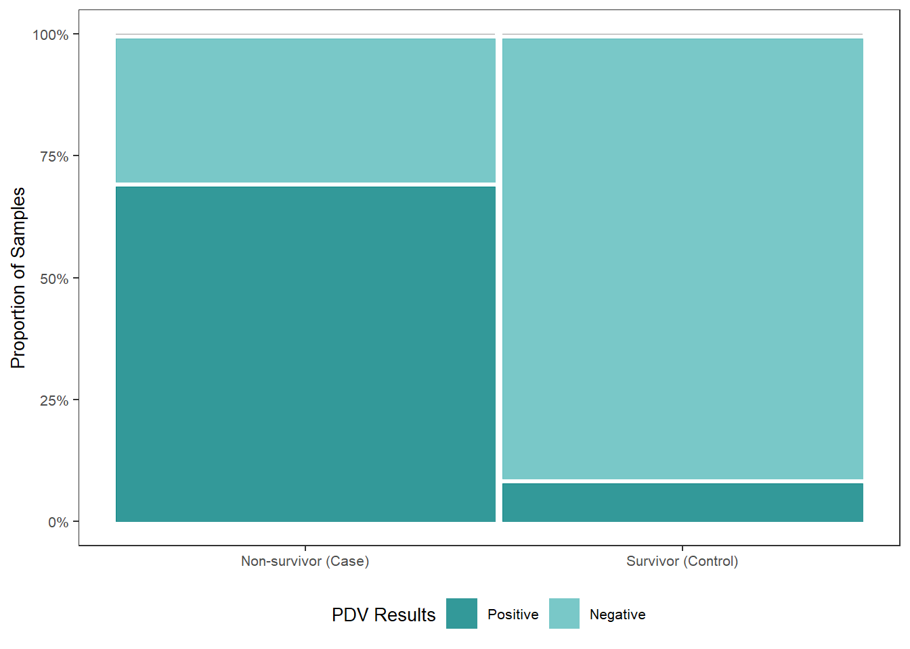
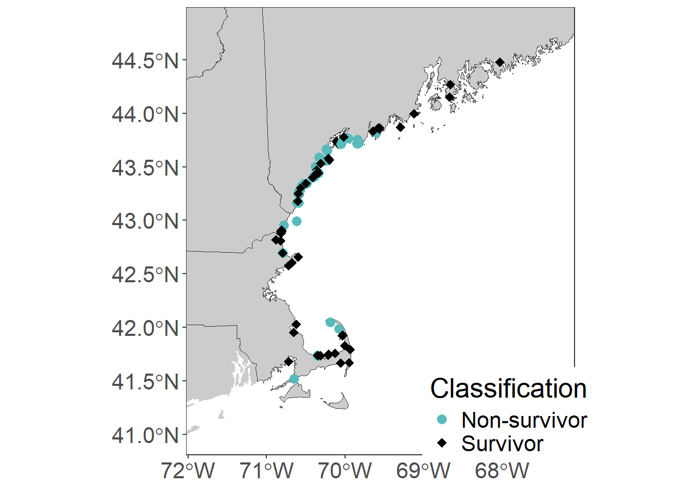

2 Tidy Data & Exploratory
2.2 Data
meta <-
read.csv("Input Files/metadata.csv") %>%
mutate(classification=factor(classification, levels=c("Non-survivor",
"Survivor")),
condition=gsub("1", "Alive", condition),
condition=gsub("2", "Fresh Dead", condition),
condition=gsub("3", "Mod Decomp", condition),
condition=gsub("Moderate Decomposition", "Mod Decomp", condition),
condition=gsub("Advanced Decomposition", "Adv Decomp", condition),
condition=factor(condition, levels=c("Alive", "Fresh Dead", "Mod Decomp",
"Adv Decomp")),
age.class=factor(age.class, levels=c("Pup/Calf", "Yearling",
"Subadult", "Adult", "Unknown")),
seq.run=factor(seq.run, levels=c("1", "2")))
write.csv(meta, "Output Files/metadata_tidy.csv",
row.names = FALSE)2.3 Descriptive Statistics
##
## high low
## 20 87## # A tibble: 2 × 2
## coverage mean
## <chr> <dbl>
## 1 high 57.9
## 2 low 3.672.4 Exclude samples
Low read mapping: 43, 74, 77, 106 Low confidence in classification: 79
meta <-
meta %>%
filter(!sample.no == "43" &
!sample.no == "74" &
!sample.no == "77" &
!sample.no == "79" &
!sample.no == "106")2.4.1 During/After Outbreak - Tufts Only
tufts_outbreak <-
meta %>%
select(classification, pdv.tufts) %>%
filter(!pdv.tufts == "N/A") %>%
mutate(pdv.tufts=factor(pdv.tufts, levels=c("Positive", "Negative", "N/A")),
classification = ifelse(classification == "Non-survivor",
"Non-survivor (Case)", "Survivor (Control)")) %>%
ggplot(data=.) +
geom_mosaic(aes(x=product(pdv.tufts,classification), fill=pdv.tufts)) +
scale_fill_manual(values=c("Negative" = "#58baba",
"Positive" = "#008080"),
name="PDV Results") +
scale_y_continuous(labels = scales::percent) +
labs(y="Proportion of Samples") +
theme_bw() +
theme(panel.grid.major = element_blank(),
panel.grid.minor = element_blank(),
axis.title.x = element_blank(),
legend.position="bottom",
text = element_text(size=10),
plot.title = element_text(hjust = 0.5))
tufts_outbreak
ggsave("Figures/pdv-classification_tuftsresults.jpeg", tufts_outbreak,
width = 6, height = 5, units = "in")2.4.1.1 Tufts Figure - Presentation
tufts_pres <-
meta %>%
select(classification, pdv.tufts) %>%
filter(!pdv.tufts == "N/A") %>%
mutate(pdv.tufts=factor(pdv.tufts, levels=c("Positive", "Negative", "N/A")),
classification = ifelse(classification == "Non-survivor",
"Non-survivor (Case)", "Survivor (Control)")) %>%
ggplot(data=.) +
geom_mosaic(aes(x=product(pdv.tufts,classification), fill=pdv.tufts)) +
scale_fill_manual(values=c("Negative" = "#B5CDD3",
"Positive" = "#7F7B9A"),
name="PDV Results") +
scale_y_continuous(labels = scales::percent) +
labs(y="Proportion of Samples") +
theme_bw() +
theme(panel.grid.major = element_blank(),
panel.grid.minor = element_blank(),
axis.title.x = element_blank(),
legend.position="bottom",
text = element_text(size=16),
plot.title = element_text(hjust = 0.5))
tufts_pres
2.4.2 Sample statistics
##
## 1 2
## 49 53table(meta$condition, meta$classification) %>%
data.frame() %>%
mutate(total = as.numeric(ifelse(Var2 == "Non-survivor", "47", "55"))) %>%
mutate(Prop = (Freq/total)*100)## Var1 Var2 Freq total Prop
## 1 Alive Non-survivor 28 47 59.574468
## 2 Fresh Dead Non-survivor 14 47 29.787234
## 3 Mod Decomp Non-survivor 4 47 8.510638
## 4 Adv Decomp Non-survivor 1 47 2.127660
## 5 Alive Survivor 40 55 72.727273
## 6 Fresh Dead Survivor 10 55 18.181818
## 7 Mod Decomp Survivor 5 55 9.090909
## 8 Adv Decomp Survivor 0 55 0.000000table(meta$sex, meta$classification) %>%
data.frame() %>%
mutate(total = as.numeric(ifelse(Var2 == "Non-survivor", "47", "55"))) %>%
mutate(Prop = (Freq/total)*100)## Var1 Var2 Freq total Prop
## 1 Female Non-survivor 19 47 40.425532
## 2 Male Non-survivor 28 47 59.574468
## 3 Unknown Non-survivor 0 47 0.000000
## 4 Female Survivor 36 55 65.454545
## 5 Male Survivor 17 55 30.909091
## 6 Unknown Survivor 2 55 3.636364table(meta$age.class, meta$classification) %>%
data.frame() %>%
mutate(total = as.numeric(ifelse(Var2 == "Non-survivor", "47", "55"))) %>%
mutate(Prop = (Freq/total)*100)## Var1 Var2 Freq total Prop
## 1 Pup/Calf Non-survivor 7 47 14.893617
## 2 Yearling Non-survivor 23 47 48.936170
## 3 Subadult Non-survivor 9 47 19.148936
## 4 Adult Non-survivor 7 47 14.893617
## 5 Unknown Non-survivor 1 47 2.127660
## 6 Pup/Calf Survivor 31 55 56.363636
## 7 Yearling Survivor 12 55 21.818182
## 8 Subadult Survivor 2 55 3.636364
## 9 Adult Survivor 9 55 16.363636
## 10 Unknown Survivor 1 55 1.818182##
## Non-survivor Survivor
## 0.4607843 0.5392157##
## N/A Negative Positive
## 0.1274510 0.5294118 0.3431373##
## N/A Negative Positive
## 0.2352941 0.4607843 0.30392162.5 Map of Strandings
US <-
read_sf("Input Files/cb_2022_us_state_500k")
NE <-
subset(US, NAME=="Maine" | NAME=="New Hampshire" | NAME=="Massachusetts" | NAME=="Vermont")
map <-
ggplot()+
geom_sf(data=US, fill="gray80", color="gray80", size = 0.001) +
geom_sf(data=NE, fill="gray80", color="gray20", size=.01) +
coord_sf(xlim=c(-67.3,-71.8), ylim=c(41,44.8)) +
geom_point(data=meta, aes(x=long, y=lat,
color=classification,
shape=classification),
size=3) +
# geom_label_repel(aes(x = long, y = lat, label = field.id, fill = NA), data = meta,
# max.overlaps = 40,
# label.size = NA) +
scale_color_manual(values=c("#58baba", "black"), name="Classification") +
scale_shape_manual(values=c(16, 18), name="Classification") +
labs(x=NULL, y=NULL) +
theme_bw() +
theme(panel.grid = element_blank(),
text = element_text(size=20),
legend.position = "inside",
legend.position.inside = c(0.83,0.09))
map
2.6 Case v Control ~ Factors
2.6.1 During/After Outbreak - All Data
##
## Non-survivor Survivor
## N/A 7 17
## Negative 12 35
## Positive 28 3##
## Non-survivor Survivor
## 47 55outbreak <-
meta %>%
select(classification, pdv) %>%
mutate(pdv=factor(pdv, levels=c("Positive", "Negative", "N/A"))) %>%
ggplot(data=.) +
geom_mosaic(aes(x=product(pdv,classification), fill=pdv)) +
scale_fill_manual(values=c("N/A" = "grey",
"Negative" = "#58baba",
"Positive" = "#008080"),
name="PDV") +
scale_y_continuous(labels = scales::percent) +
labs(y="Proportion of Samples") +
theme_bw() +
theme(panel.grid.major = element_blank(),
panel.grid.minor = element_blank(),
axis.title.x = element_blank(),
legend.position="bottom",
text = element_text(size=10),
plot.title = element_text(hjust = 0.5))
outbreak
2.6.2 Sex
sex <-
meta %>%
select(sex, pdv) %>%
mutate(pdv=factor(pdv, levels=c("Positive", "Negative", "N/A"))) %>%
ggplot(data=.) +
geom_mosaic(aes(x=product(pdv,sex), fill=pdv)) +
scale_fill_manual(values=c("N/A" = "grey",
"Negative" = "#008080",
"Positive" = "#58baba"),
name="PDV") +
scale_y_continuous(labels = scales::percent) +
labs(y="Proportion of Samples") +
theme_bw() +
theme(panel.grid.major = element_blank(),
panel.grid.minor = element_blank(),
axis.title.x = element_blank(),
legend.position="bottom",
text = element_text(size=10),
plot.title = element_text(hjust = 0.5))
sex
2.6.3 Age
age <-
meta %>%
select(age.class, pdv) %>%
mutate(pdv=factor(pdv, levels=c("Positive", "Negative", "N/A")),
age.class=factor(age.class, levels=c("Pup/Calf", "Yearling",
"Subadult", "Adult", "Unknown"))) %>%
ggplot(data=.) +
geom_mosaic(aes(x=product(pdv,age.class), fill=pdv)) +
scale_fill_manual(values=c("N/A" = "grey",
"Negative" = "#008080",
"Positive" = "#58baba"),
name="PDV") +
scale_y_continuous(labels = scales::percent) +
labs(y="Proportion of Samples") +
theme_bw() +
theme(panel.grid.major = element_blank(),
panel.grid.minor = element_blank(),
axis.title.x = element_blank(),
legend.position="bottom",
text = element_text(size=10),
plot.title = element_text(hjust = 0.5))
age